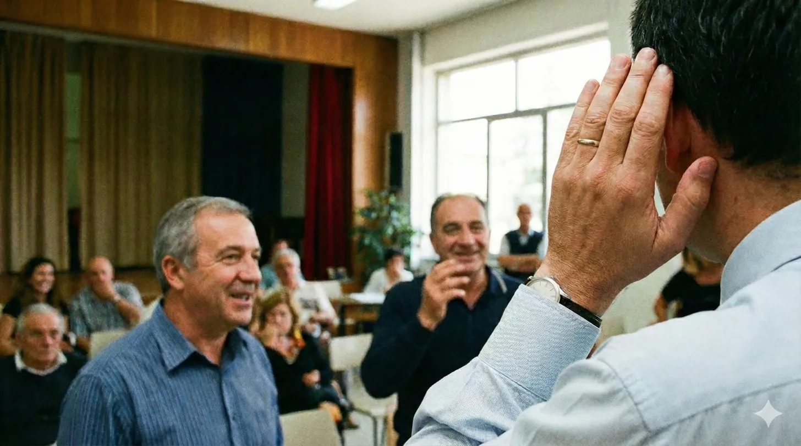

NewsLetter #3
La velocità come illusione, la profondità come necessità
Fiducia e Ascolto + Risorse (tools) per l’IA nella PA italiana
📝 Questa settimana abbiamo iniziato una serie di 5 post sulla Comunicazione Pubblica Affidabile, basata su un documento della Commissione Europea che esplicita una verità scomoda: costruire fiducia è lento, perderla è velocissimo.
La Raccomandazione 1 lo dice chiaramente: la fiducia ha natura asimmetrica. Basta una singola istanza di inaffidabilità per dimostrare che “non ci si può sempre fidare”. La trustworthiness non si costruisce con un post virale o una campagna brillante. Si costruisce con coerenza nel tempo, trasparenza costante, ascolto genuino.
E qui sta il paradosso dell’AI nella comunicazione pubblica: gli strumenti promettono velocità – rispondere a mille richieste al secondo, generare contenuti in tempo reale, analizzare sentiment istantaneamente. Ma la fiducia che questi strumenti dovrebbero servire richiede esattamente l’opposto: tempo, riflessione, profondità.
Questa settimana due interventi esterni hanno portato la stessa interferenza semantica da angolazioni diverse. Mattia Marangon ha condiviso una pratica di Harvard: osservare un’opera d’arte per 3 ore consecutive senza distrazioni. Maura Gancitano ha riflettuto sulla difficoltà di raccontare il “lavoro culturale”: quel lavoro fatto di lentezza, conoscenza stratificata, consapevolezza che non si presta a metriche immediate.
La domanda che attraversa questa newsletter è quindi: come facciamo a governare strumenti che accelerano, quando il nostro lavoro richiede di rallentare?
📋 I POST DELLA SETTIMANA
1. Comunicazione Pubblica Affidabile [Puntata 1/5]: Fiducia e Ascolto

Abbiamo inaugurato una serie di 5 puntate basate su “Trustworthy Public Communication” della Commissione Europea (2024). Non l’ennesima guida generica, ma un framework evidence-based con 10 raccomandazioni concrete.
Il documento è esplicito: “Nell’imminente valanga di contenuti generati dall’AI, dove le fonti di informazione saranno regolarmente messe in discussione, i comunicatori pubblici affidabili hanno un vantaggio chiave.” La fiducia si perde molto più facilmente di quanto si costruisca. È il principio dell’asimmetria: serve tempo per costruirla, un attimo per distruggerla. Ogni risposta errata di un chatbot PA, ogni bias non gestito, ogni “non ho capito” ripetuto mina quella fiducia faticosamente conquistata.
Raccomandazione 2: Investire nell’ascolto dei cittadini
I cittadini non vogliono più essere “destinatari di broadcast“ (pubblico di mass media). Le ricerche dimostrano: quando hanno incentivo, mezzi e tempo per informarsi, forniscono input migliori al processo politico rispetto a policymaker privi di esperienza diretta dei problemi. La deliberazione collettiva porta a preferenze più informate, migliora la comprensione, promuove pensiero critico invece di attaccamento a posizioni estreme.
Gli strumenti AI possono analizzare consultazioni pubbliche su larga scala, identificare pattern nei feedback. Ma servono competenze per progettarli in modo che facilitino ascolto genuino, che non amplifichino - per esempio - solo le voci più rumorose o confermino bias esistenti. Il punto critico: ascolto vero richiede tempo e l’AI può processare velocemente, ma la qualità dell’ascolto non si misura ovviamente in velocità di elaborazione.
2. La cassetta degli attrezzi: istituzioni e risorse per l’AI nella PA italiana
Quando parliamo di Intelligenza Artificiale nella PA italiana, il panorama istituzionale può sembrare frammentato. Questa è una MINI-guida per orientarsi.
Abbiamo categorizzato le risorse essenziali per funzione:
Normativa e Governance: AGID (autorità nazionale AI nella PA), ACN (cybersicurezza e vigilanza), Dipartimento Trasformazione Digitale (strategia nazionale)
Dati e Documentazione: Dati.gov.it (catalogo open data PA), Gazzetta Ufficiale (testi normativi)
Formazione: PA Digitale 2026 (PNRR), FormezPA, Syllabus DigComp PA
Community: PA Social, Forum PA
Compliance: Garante Privacy, Consiglio di Stato
Ricerca: Fondazione E.N.I.A., I3 Lab UNIMI
APRI IL LINK per salvare le risorse: un AI Officer efficace deve navigare questo ecosistema, capire chi fa cosa, evitare duplicazioni, collegare le competenze giuste al momento giusto. Non è solo questione tecnica: è governance. E la governance richiede visione d’insieme che non si improvvisa.
🔍 SGUARDI LATERALI
Contro il Brain Rotting: l’esercizio della contemplazione
Da Mattia Marangon
Osservare un’opera d’arte per 3 ore consecutive senza cellulare o distrazioni. Questo è l’esercizio che una docente di Harvard propone ai suoi studenti di storia dell’arte.
Il carosello di Mattia Marangon e Giulio Xhaet spiega perché questa sfida potrebbe essere “decisivamente utile per il nostro cervello”. È una riflessione sulla velocità di fruizione che abbiamo tutti e sulla poca abitudine a contemplare le cose.
Il mio commento al post era: “La via di fuga dal Brain Rotting. Grazie per questo slidepost, che in fondo è come l’acqua calda. Sappiamo che c’è, ma non come si fa e bisogna riscoprirla ogni volta. Solo che questa sensazione, frenesia, tendenza è sicuramente di Massa. Per cui: forza andiamo avanti, sì, ma col freno tirato!”
Perché in questa newsletter?
Perché la Raccomandazione 2 della Commissione UE parla di deliberazione cittadini. E la deliberazione richiede esattamente ciò che l’esercizio di Harvard allena: capacità di sostare, osservare, riflettere senza cercare immediatamente una conclusione o una reazione.
Gli strumenti AI ci abituano a risposte immediate. La governance dell’AI richiede il contrario: capacità di fermarsi davanti alla complessità e contemplarla abbastanza a lungo da capirla davvero, ...certo magari non proprio tre ore!
Se non coltiviamo questa capacità - come comunicatori, come AI Officer, come cittadini responsabili - finiremo per delegare all’algoritmo non solo l’esecuzione ma anche la riflessione. E questo sarebbe il vero “brain rotting” istituzionale.
Il lavoro culturale e la necessità della lentezza
Da Maura Gancitano
Maura Gancitano, filosofa e co-founder di Tlon, riflette sull’inquietudine di raccontare il “lavoro culturale” – quel lavoro fatto di lentezza, conoscenza stratificata, profondità che non si presta a metriche immediate o risultati quantificabili.
Cosa c’entra con l’AI Officer fulcro della nostra Newsletter?
Ha a che fare con la professione di comunicatore che deve essere capace di profondità e conoscenza della lentezza come ricchezza, anche quando il suo lavoro impone spesso tempi veloci e immediati.
La consapevolezza di riflettere non è un’opzione che si può accantonare. La conoscenza deve essere sempre tenuta ben presente quando si comunica con un pubblico, proprio in virtù del fatto che è un pubblico vario che possa avere o no conoscenze profonde, e per questo va comunque rispettato. Lo si fa anche con pratiche di analisi profonde come di fronte a un quadro (vedi Marangon), o con le difficoltà che si ritrovano in chi deve spiegare il “lavoro culturale” (Gancitano).
Il collegamento con le nuove tecnologie:
Un “chatbot della PA” può rispondere velocemente a una domanda su orari di apertura. Ma spiegare una policy complessa, contestualizzare una scelta amministrativa, mediare tra esigenze diverse richiede quel “lavoro culturale” fatto di stratificazioni, conoscenza del contesto, capacità di leggere tra le righe.
L’AI può supportare, ma non può sostituire quella profondità. E se noi comunicatori perdiamo l’abitudine alla lentezza necessaria, perdiamo anche la capacità di governare gli strumenti che dovrebbero servirci.
📢 PROSSIMA SETTIMANA
Settimana prossima è la settimana di Natale. Rallenteremo tutti un po’, probabilmente. Ma la newsletter esce comunque, perché la costanza costruisce fiducia (vedi Raccomandazione 1 😉).
💬 CALL TO ACTION
Siamo oltre 270 iscritti a questa newsletter. Il numero continua a crescere.
Vi chiedo, come d’uopo, tre cose:
Condividete questa newsletter con chi secondo voi dovrebbe leggerla. Un collega PA, un responsabile innovazione, un comunicatore che sta cercando di capire come posizionarsi nell’era dell’AI.
Commentate i post della settimana. In particolare sulla Puntata 1/5: quali delle due raccomandazioni (Fiducia o Ascolto) vi sembra più urgente nella vostra realtà? Dove vedete il gap più grande?
Mandate risorse utili. Nel post sulla cassetta degli attrezzi ho chiesto: avete link, strumenti, documenti che vorreste condividere con la community? Scrivetemi. Se rilevanti, li includerò nelle prossime newsletter con un vostro commento o credito.
🎄 AUGURI (ANTICIPATI)
Questa è l’ultima newsletter prima dielle festività. La prossima sarà domenica 28 dicembre. So che molti di voi useranno questi giorni per staccare, rallentare, contemplare (magari non per 3 ore davanti a un quadro (!!), ma almeno qualche ora senza notifiche). Fatelo.Ci vediamo martedì con la Puntata 2/5. E domenica 28 con la Newsletter #4.
Buone feste.
#AIGovernance #PA #AGID #ACN
#RisorseDigitali #InnovazionePubblica #AILiteracy
Martin Enrico Iglesias AI Officer | Giornalista Professionista ODG | Comunicatore Pubblico
“AI Officer :: NewsLetter” esce ogni domenica sera. Interferenze semantiche sull’AI nella Comunicazione Pubblica italiana.